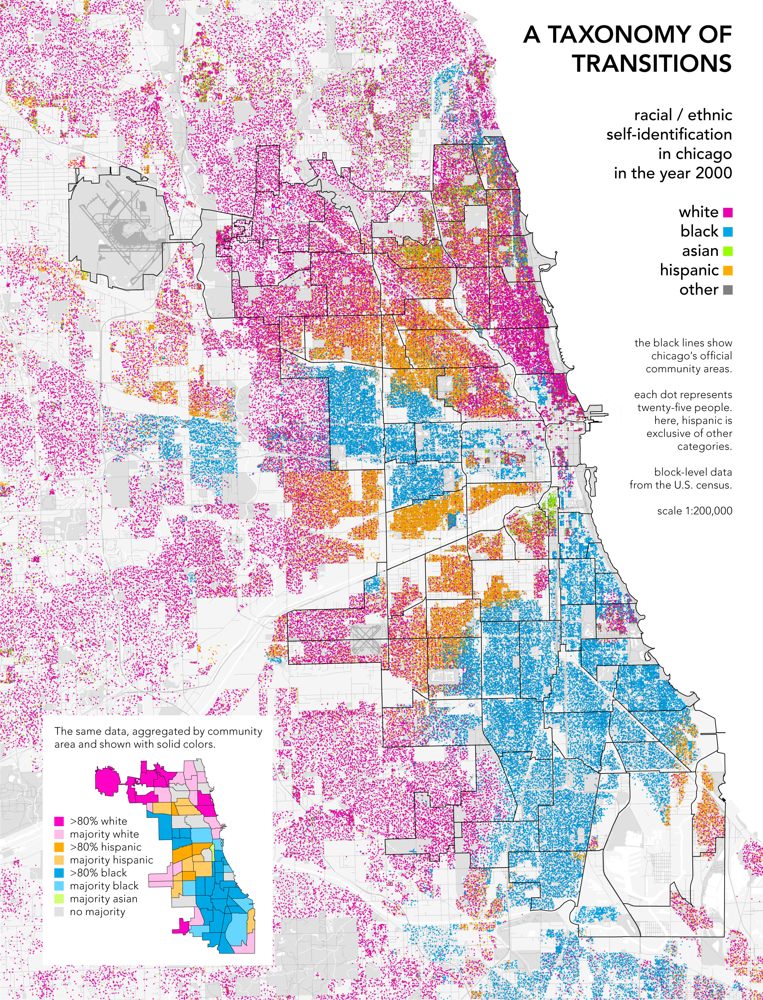

Hello!
Welcome to Week 1 of Web GIS
Overview of today's class
- Introductions
- Course Overview
- How to lie with maps
- Login to ArcGIS Online
- Zoom Polls
- Introductions
Course Overview
Course Goals
By the end of this course students...
- will be able to create interactive, online maps using ArcGIS Online & Leaflet.js
- will have a deeper knowledge of effective map design & functionality
This course is focused on visualization.
We will not focus on data management or statistics, however you should be conscientious of how these affect your maps.
Data will be provided for the course, but you are highly encouraged to use your own!
If you need help cleaning/geocoding data from other courses or projects, reach out to me.
Course Ecosystem
| Zoom | |
|---|---|
| Github |
|
| Blackboard |
|
Main Course Tools
- ArcGIS Online
- Leaflet.js
Your final AGOL project will be something like this
Something like this requires a little more coding & data management than we will cover in this course.
Pros/Cons of AGOL
| Pros | |
|---|---|
| Cons |
Your final Leaflet project will be something like this
An example of a more complicated leaflet map. We will not get this far in this course, but very doable if you keep at it.
Pros/Cons of Leaflet
| Pros | |
|---|---|
| Cons |
How to "Lie" with Maps
First, a quick refresher on Thematic Maps
We will create interative thematic maps in this course, as opposed to general reference maps or topographical maps.
Thematic Maps: maps that visualize a certain topic or theme
Let's review common types of thematic maps:
- Choropleth
- Proportional Symbols
- Cartograms
- Dot
- Flow Map
Choropleth Maps use color or shading to show data over a defined area.
You'll see a lot of these.
Proportional Symbol Maps use symbols of varying sizes to show a quantitative value.
Can be any shape. Note the shape of the geographic unit itself is not augemented.
Cartograms distort land area to represent a variable.
Color is used to represent a second variable. (and third variable!)

Dot Density Maps use a dot to represent the distribution (or density) of a phenomenon.
Color is used to represent a second variable.
The famous John Snow Cholera map.
Heatmaps are a form of dot density maps
AKA Isopleth Maps if you want to be fancy

Flow maps show the movement of a unit or variable.
Color & symbol size are used to represent second & third variables
Color used to represent second variable
Minard's flow map of Napoleon's 1812 Russian campaign.
Symbol size & color used to represent second & third variable.
Everyone using or making a map is doing so for a reason.
Some maps are a bit less subtle about their agendas than others

Spooky!
This map was probably not designed with this in mind, but it is being used to support a position.
all maps 'lie'
It is impossible* to have a completely objective map
Even if your goal is to create an objective data visualization, every map maker needs to make choices that effectively result in the map telling lies.
*Okay, a map with a 1:1 scale could be objective. But it would be pretty useles

Despite the obvious agenda of one, both can be considered honest depictions of the 2016 election results.
If your goal is to make as objective a map as possible, consider why you're making certain design choices.
Be prepared to have maps that do not look as dramatic or convincing as you'd like. Even though you could easily make them look dramatic and convincing.
You are free to make map design choices that support your message.
Preferably, you're not going to obfuscate information...
...but if you're going to, let's make sure you do it on purpose.
Until you're out in the world pushing agendas, let's be conscientious of the following map design choices that can be deceptive:
1. How are you aggregating your data areally?

Modifiable Areal Unit Problem
Many ways to divide Chicago
Administrative units are not always drawn randomly or objectively...
Oy vey
Alternatives?
Warning - you will not always have the data available for these alternatives!
Proportional Symbols
Cartograms
Dot Density
Note that symbols on dot density or proportional symbol maps can be styled in misleading ways as well
Artist rendering of Australian Wildfires using a heatmap technique
2. How are you classifying your data?
Common Classifications
Common Classification Schemes used by GIS Software

What does "% Elderly Living Alone" mean anyway?
Watch out for temporal issues!
Heat Wave Deaths are from the 1996 Chicago Heatwave, Census Tract Boundaries & Elderly Data = 2018
3. How are you projecting your data?
Cartograms rely on the user having both a strong mental image of the area, but also one that matches the projection of the non-distorted map.
Cartograms rely on the user having both a strong mental image of the area, but also one that matches the projection of the non-distorted map

Often a reference map is included just for this purpose
Many of you probably grew up looking at this map
Which distorts land area in order to preserve direction (it was made for sailors!)
Some of you might be more familiar with this one
Now area is preserved, but shape is distorted

Left: Economist Original, Right: Corrected

All maps distort something
And why are we even centering things on the UK, anyway?
4. Color Considerations
Color is cultural, consider what the color you're choosing says.

Red = Liberal, Blue = Conservative

Color schemes that may feel "natural" can be the result of long-standing cartographic requirements

This is a great resource in general


Two uses of color: hue & saturation to display two separate values
Before you look at the text on the next two maps, consider your immediate impression of what the map colors are telling you.


Before next week login to AGOL
You should be able to login with your NetID here but please, just check in case we need to troubleshoot
Questions?